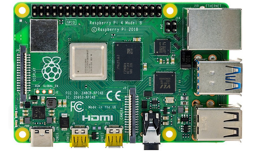

De Raspberry Pi is het embedded system dat wij in het labo zullen gebruiken.
Een Raspberry Pi is eigenlijk een volwaardige computer met een ARM processor, werkgeheugen en een SD kaart als harde schijf.
Er Windows op installeren zal, door de ARM instructieset, niet lukken. Maar je kan er wel een aangepaste ARM versie van Linux op draaien.
Op de Raspberry Pi zijn er ook een aantal USB aansluitingen voorzien samen met LAN, WiFi en Bluetooth. Je sluit hem aan op een scherm via micro HDMI.
Binnen een generatie zijn er verschillende uitvoeringen: 2 GB RAM, 4 GB RAM, ... . Dit geheugen kan je niet uitbreiden. Het is en blijft natuurlijk wel een embedded system.
Aan een Raspberry Pi kan je geen I/O eiland verbinden maar bovenaan vind je een reeks I/O pinnen terug. Je kan die aansturen en uitlezen met bijvoorbeeld C# of Python. Er zijn hier echter wel enkele opmerkingen die we moeten maken waarin een Raspberry Pi (computer) verschilt van een Arduino (microcontroller) of PLC.
De vormfactor heeft ongeveer de afmetingen van een bankkaart. Er zijn behuizingen voor de Raspberry Pi te koop en sommige zijn wel compatibel met elkaar (bijvoorbeeld Raspberry Pi Model 3 B en Model 3 B +) maar het is eigenlijk enkel maar de buitenste afmetingen die dezelfde blijven. Let dus altijd goed op als je een behuizing koopt!